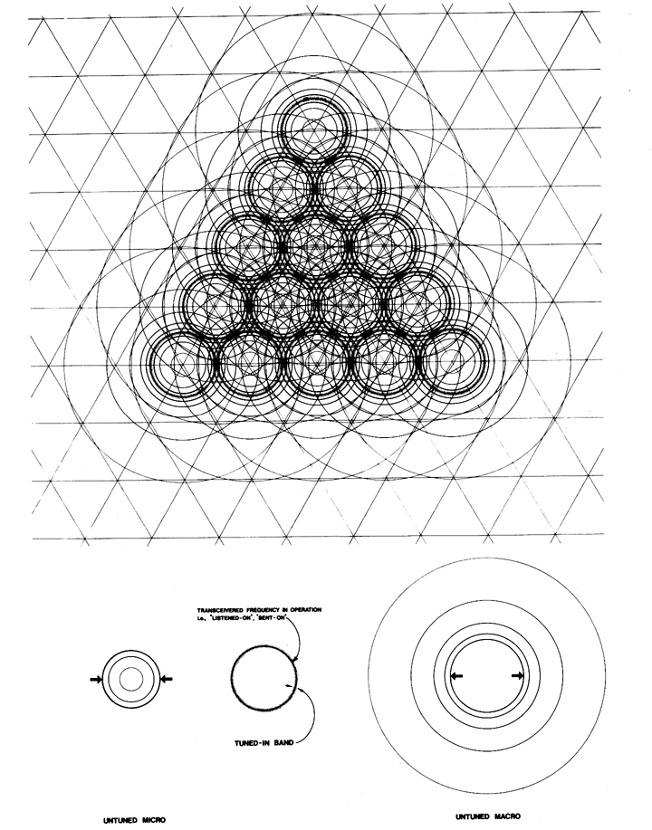

|  |
| Fig. 1033.11 Electromagnetic Field of Closest-packed spheres: This figure represents one of the four planes of symmetry of the closest-packed unit-radius spheres, of the isotropic vector matrix. Between the untuned macro and the untuned micro is the transceivered frequency operation of the tuned-in and transmitted information. |